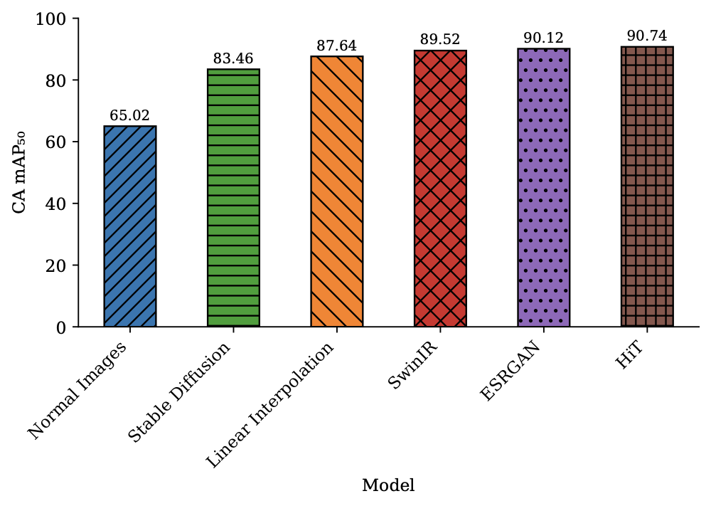

Benchmark Results
Benchmarking Overview
We evaluated 28 state-of-the-art object detection models across four challenging evaluation scenarios to assess the utility of SentinelKilnDB for real-world deployment.
Evaluation Tasks
T1: In-Region Detection
Standard evaluation where models are tested on regions included in the training distribution.
T2: Out-of-Region Generalization
Geographic domain adaptation test where models trained on one region are evaluated on geographically distant regions.
T3: Temporal Generalization
Leave-one-season-out (LOSO) evaluation using data from Winter (W), Pre-Monsoon (PM), Monsoon (M), and Post-Monsoon (PoM).
T4: Super-Resolution Enhancement
Evaluation of detection performance on enhanced-resolution imagery using various super-resolution techniques.
Key Results
In-Region Performance Comparison
Complete Model Performance (Top 15 Models)
| Rank | Category | Method | Publication | Backbone | BBox | CA mAP₅₀ | CFCBK | FCBK | Zigzag |
|---|---|---|---|---|---|---|---|---|---|
| 1 | One-stage | YOLOv11L-OBB | 2024 | YOLOv11 | OBB | 84.94 | 79.87 | 65.95 | 59.83 |
| 2 | Transformer | RT-DETR | ICLR-24 | ResNet50 | AA | 84.71 | 69.97 | 62.81 | 47.77 |
| 3 | One-stage | YOLOv8L-WORLDv2 | 2024 | YOLOv8 | AA | 83.11 | 66.75 | 62.85 | 50.52 |
| 4 | Two-stage | RoI Transformer | CVPR-19 | Swin-T | OBB | 70.74 | 40.45 | 51.84 | 55.23 |
| 5 | One-stage | YOLOv9E-OBB | 2024 | YOLOv9 | OBB | 67.03 | 30.27 | 48.55 | 52.27 |
| 6 | Foundation | CopernicusFM | 2024 | ViT-B | AA | 62.48 | 35.62 | 45.83 | 48.99 |
| 7 | One-stage | YOLOv8L-OBB | 2023 | YOLOv8 | OBB | 60.15 | 32.11 | 42.98 | 45.36 |
| 8 | Foundation | SatMAE | NeurIPS-22 | ViT-B | AA | 58.77 | 28.94 | 41.22 | 44.15 |
| 9 | One-stage | ConvNeXt | CVPR-22 | ConvNeXt | AA | 51.01 | 8.79 | 37.00 | 16.88 |
| 10 | Two-stage | H2RBox | ICLR-23 | ResNet50 | OBB | 45.91 | 23.81 | 28.85 | 30.81 |
Out-of-Region Generalization
Spatial and Temporal Performance Summary
| Model | Uttar Pradesh | Dhaka | Punjab | LOCO (I+B+P→A) | Seasonal (W→PM) |
|---|---|---|---|---|---|
| YOLOv8L-WORLDv2 | 83.11 | 59.64 | 68.84 | 46.34 | 55.56 |
| YOLOv11L-OBB | 79.49 | 51.49 | 67.81 | 75.02 | 60.21 |
| RT-DETR | 84.71 | 61.50 | 75.58 | 49.89 | 58.43 |
| ConvNeXt | 51.01 | 7.07 | 16.73 | 35.22 | 42.15 |
| RoI Transformer | 63.83 | 13.68 | 27.24 | 41.67 | 48.91 |
Key Findings: - Significant performance drop when transferring across regions (15-25% mAP decrease) - YOLOv11L-OBB maintains best overall cross-region performance - Geographic domain shift presents major challenge for deployment
Super-Resolution Enhancement Results

| Method | Resolution | CA mAP₅₀ | CFCBK | FCBK | Zigzag | PSNR | SSIM |
|---|---|---|---|---|---|---|---|
| Original | 128×128 | 65.02 | 0.00 | 0.00 | 63.18 | - | - |
| Bilinear | 512×512 | 87.64 | 22.77 | 34.00 | 86.11 | - | - |
| Stable Diffusion | 512×512 | 83.46 | 38.50 | 27.04 | 79.60 | 26.71 | 0.6785 |
| SwinIR | 512×512 | 89.52 | 37.01 | 48.11 | 86.54 | 27.14 | 0.7780 |
| ESRGAN | 512×512 | 90.12 | 47.43 | 42.89 | 87.35 | 27.16 | 0.5678 |
| HiT-SR | 512×512 | 90.74 | 53.79 | 53.88 | 88.28 | 34.44 | 0.9168 |
Results: - Super-resolution provides substantial improvements (25+ mAP points) - HiT-SR achieves best detection performance with highest image quality - Even simple bilinear interpolation provides significant gains
Dataset Comparison
| Dataset | Imagery | Classes | Images | Instances | GSD | Public |
|---|---|---|---|---|---|---|
| VEDAI | Aerial | 9 | 1,210 | 3,640 | 0.125m | ✅ |
| HRSC2016 | Google Earth | 25 | 1,070 | 2,976 | 0.4-2m | ✅ |
| DOTA-V1.0 | Google Earth | 15 | 2,806 | 188,282 | 0.1-4.5m | ✅ |
| DIOR-R | Google Earth | 20 | 23,463 | 192,518 | 0.5-1m | ✅ |
| SentinelKilnDB | Sentinel-2 | 3 | 78,694 | 105,933 | 10m | ✅ |
Performance Analysis
Detection Challenges
- Small Object Size: Kilns span ~30 pixels in 10m resolution imagery
- Low Contrast: Similar appearance to surrounding terrain
- Geometric Variation: Different kiln orientations and shapes
- Seasonal Changes: Appearance varies across seasons
Model Insights
- Foundation Models: Show promise but need specialized training for satellite imagery
- OBB vs AA: Oriented bounding boxes provide better spatial accuracy for irregular shapes
- Multi-Scale Features: Essential for detecting small objects in low-resolution imagery
- Data Augmentation: Critical for robust cross-region performance
Training Configuration
- Batch Size: 16 (optimized for GPU memory)
- Learning Rate: 1e-4 with cosine scheduling
- Epochs: 100 with early stopping
- Augmentation: Mosaic, mixup, rotation, scaling
- Hardware: NVIDIA A100 GPUs
Code and Models
All benchmarking code, trained models, and evaluation scripts are publicly available: